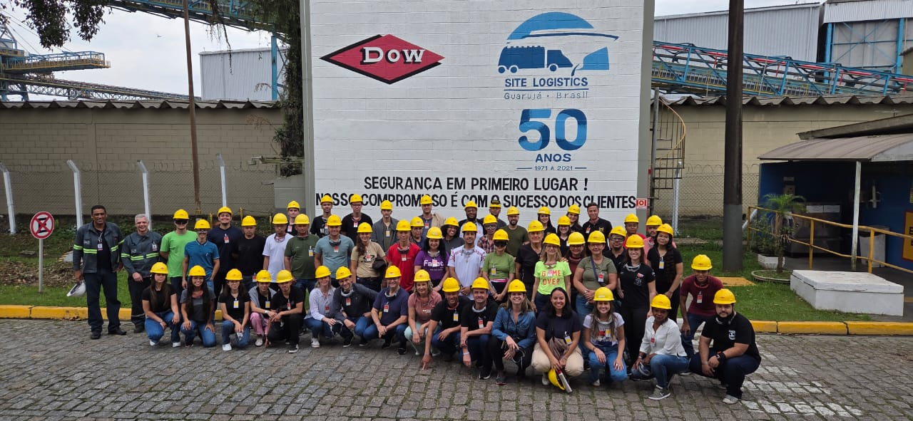

Porto de Santos e Dow Química: locais de estudo para a Fatec Jales
O Porto de Santos, um dos principais da América Latina, e a multinacional Dow Química, unidade localizada em Guarujá, tornaram-se, mais uma vez, locais valiosos de estudo para a Fatec Jales. Nos dias 3, 4 e 5 de outubro, estudantes, docentes e coordenadores de curso participaram de uma experiência inesquecível, que uniu conhecimento técnico multidisciplinar, cultura e entretenimento.
VER MAIS